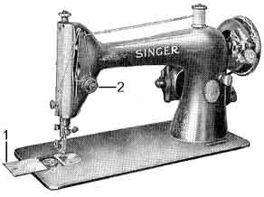

Model 15 |
Model 66 or 99 |
Model 127 or 128 |
| front view |
 front view |
front view |
| The
Model 15 is the only model with the tension control dial (2) on the
left side of the machine. |
The
Models 66 and 99 have a built-in bobbin case and are identical except
for size of the base. See table below. |
The
Models 127 and 128 are the only models to have two bobbin access plates
(1). They are identical except for size. See table below. |
Note - some manuals in this section are in pdf format. To download your free Adobe Acrobat pdf reader Click Here
| Model
Number |
Bed
Dimensions |
Tension
Control Knob Location |
Bobbin
Access Slide Plates |
Bobbin
|
Shuttle
or Bobbin Case |
Manual Source (Click for Manuals) |
| 15 |
7"
x 14.625" |
protruding
from left side |
one,
to the left |
|
|
(pdf format) |
| 66 |
7"
x 14.625" |
front |
one,
to the left |
|
none - built-in |
Model 66 Manual(pdf format) |
| 99 |
6.5"
x 12.125" |
front |
one,
to the left |
|
none - built-in |
Model 99 Manual |
| 127 |
7"
x 14.625" |
front |
two plates,
one sliding to the front, the other to the back |
|
|
Model 127 Manual(pdf format) |
| 128 |
6.5"
x 12.125" |
front |
two plates,
one sliding to the front, the other to the back |
|
Model 128 Manual(pdf format) |
1. Where is the model number on my machine? Is it the number stamped on the right front corner on the flat part of the machine?
No. Singer didn't put the model numbers on their domestic machines before the early 1950's, hence the need for this chart. The number stamped on the bed of the machine is the serial number; both letters and numbers.
2. My machine isn't black.
This page is for identifying older black-coloured Singer machines.
3. My machine is black and has a carrying handle built into the top of it with a fold-down arm to the left.
That should be the Model 301.
4. My machine has a fold-down arm to the left but no carrying handle.
That will be the Model 221, commonly known as the Featherweight.
5. My machine doesn't have a fold-down arm or a handle and looks like the Model 66.
It's possible that it could be the Model 201 which has the Paperclip Decal Pattern. There is a lesser possibility that it could be the Model 191 or 206 but they can be identified at the same location and only one design was used on these machines.
6. The bed of my machine isn't rectangular but has a sort-of scalloped edge.
These machines are older than the ones identified here and less common.
7. I think I have a Model 127 or 128 but when the slide plate is pulled out, there's nothing underneath.
Either turn the wheel at the right end of the machine until you see the shuttle or look underneath.
8. How can I find out how old my Singer is or where it was made?
Check out the tables showing date of manufacture on the Singer Company site.
9. I've heard about machines called 15-xx. Where are they?
See the Singer 15 Comparison Chart
10. Tables are confusing, where can I find pictures?
See the NeedleBar Singer Identification Gallery. This full guide contains pictures of 104 different Singer domestic machines and many industrial models too.
© Helen Scarth 2003. All Rights Reserved
This web page or any portion of it may not be reproduced in any form without the prior written permission of the copyright holder